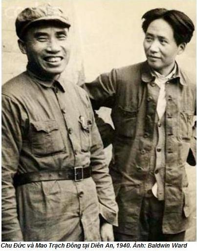

Chương 2

ăm 1949 tôi tròn 29 tuổi. Tôi là bác sĩ hàng hải ở Sydney, Úc. Qua báo chí tôi hiểu thành phố quê hương tôi đã ngừng tiếng súng. Ngày 31-01-1949 tất cả dân Bắc Bình (tên gọi Bắc Kinh thời đó) đổ ra đường để đón chào những người giải phóng mình. Kéo về đây có cả lãnh đạo đảng cộng sản. Họ dự định thành lập nước Cộng hoà nhân dân Trung Hoa. Bắc Bình lại trở thành Bắc Kinh thủ đô Trung Quốc. Tên gọi Bắc Bình, nghĩa là “bình yên phương Bắc”. Tên gọi Bắc Kinh nhận được sau khi chính phủ Tưởng Giới Thạch rút về “thủ đô phía nam” – thành phố Nam Kinh. Nội chiến trong nước giữa những người cộng sản và Quốc dân đảng vẫn tiếp tục, nhưng không ai hoài nghi rằng chiến thắng sẽ thuộc về hồng quân Trung Quốc.
Bắc Kinh, thành phố quê hương, ở đó tôi sống 13 năm đầu tiên cuộc đời. Nhà của chúng tôi xây theo phong cách truyền thống Trung Hoa. Gia đình tôi giàu có, thuộc giới thượng lưu. Thực tế chúng tôi sống không phải một căn nhà mà trong một khu gồm nhiều nhà một tầng mái ngói và ba sân riêng biệt trồng cỏ và rau. Chúng tôi sống ở phía nam Cấm Thành ở khu Lưu Linh Chương. Khu này bắt đầu sau bức tường dày, ngăn cách Thành Nội, nơi ở hoàng đế. Cứ mỗi năm một lần, ngày lễ Xuân, mọi người Bắc Kinh đổ về đây. Tại đây có thể mua được đồ chơi Trung Quốc cho trẻ con. Tên gọi “Lưu Linh Chương” xuất phát từ chữ Trung Quốc “Lưu Linh” – bắt mắt. Ở đây thời Minh có xưởng thợ làm ngói mạ vàng cho các toà nhà hoàng cung (1368-1644)
Ông tôi mất trước khi tôi ra đời, nhưng gia phong cụ lập ra vẫn được giữ gìn. Chân dung cụ treo ở một phòng, nơi hàng năm chúng tôi thường tụ họp tất cả gia đình vài lần để tưởng nhớ. Phòng thăm bệnh của cụ ngay trong khu nhà vẫn giữ nguyên, nhà thuốc Bắc Chí Đường do cụ sáng lập vẫn phát đạt nhưng giao cho một người bào chế tin cậy trông nom. Cụ tôi giàu có nhưng được mọi người kính trọng, tôn quý vì cụ luôn luôn giúp đỡ người nghèo. Trong hiệu Bắc Chí Đường người bệnh có thể được phát không, nếu như quá nghèo. Không những người dân Lưu Linh Chương mà còn cả Bắc Kinh biết tiếng tăm cụ. Tôi lớn lên trong gia đình, nơi người ta cho rằng người nghèo chịu đựng quá nhiều đau khổ, cần lòng từ thiện.
Tuy nhiên do sự giàu có của chúng tôi đã tạo ra bức tường vô hình ngăn cách với các gia đình nghèo. Mẹ tôi không cho phép tôi chơi với trẻ con gia đình nghèo, trong thời ấy có nhiều người nghèo ở Bắc Kinh. Từ thuở thơ ấu, gia đình khuyên tôi cần tiếp tục truyền thống và tôi trở thành bác sĩ. Tôi cho rằng tôi được sinh trong gia đình đặc biệt. Tôi rất tự hào về dòng tộc, muốn trở thành người xuất chúng.
Em trai bố tôi, cũng trở thành bác sĩ, đóng góp nhiều công sức cứu giúp người nghèo. Khi tỉnh Hồ Nam có dịch thương hàn, chú tôi tự nguyện đến đó để cứu họ, chính ông cũng bị lây bệnh, chết khi chưa tròn 30 tuổi. Thím và hai con trai ông vẫn sống trong khu nhà, chúng tôi coi nhau như anh em ruột. Tôi còn có người anh trai cùng cha khác mẹ, con người vợ trước của bố tôi. Tất cả chúng tôi thân thiết như anh em ruột thịt. Bố tôi cưới mẹ tôi sau khi bà cả qua đời.
Riêng cha tôi đã phá vỡ gia phong của dòng họ. Năm 1920 ông sang Pháp tu nghiệp. Lúc ấy tôi mới ra đời. Tôi biết mặt bố mãi 7 năm sau. Qua thư từ, chúng tôi biết trong số sinh viên của nhóm bố tôi có Chu Ân Lai, người mà ông đánh bạn. Tình bạn của họ giữ được đến tận khi bố tôi mất, dù rằng Chu Ân Lai trở thành lãnh tụ cộng sản, còn bố tôi thuộc về những người quốc gia thuộc Quốc dân đảng, ông nắm chức vụ cao trong chính phủ Tưởng Giới Thạch.
Việc bố tôi quay về nước gây ra một bê bối, lộn xộn trong gia đình. Ông mang theo một bà vợ người Pháp, cùng sống trong ngôi nhà chúng tôi. Mẹ tôi, một phụ nữ Trung Hoa điển hình, ít học, xuất thân từ tầng lớp thường dân, bó chân theo phong tục. Hy vọng duy nhất của bà trở thành người vợ đảm đang, người mẹ hiền chăm sóc gia đình con cái. Theo tục lệ Trung Quốc thời bấy giờ, đàn ông giàu, có nhiều vợ tương đối phổ biến. Nhưng gia phong của dòng tộc tôi không chấp nhận ông lấy hai vợ, không những thế còn cho đó là sự sỉ nhục gia đình.
Bà vợ hai của bố tôi là người tốt, lịch sự, học thức cao. Bà dạy tiếng Pháp ở Đại học Bắc Kinh, đặc biệt rất luôn luôn thân thiện, đối xử tử tế với tôi. Tuy nhiên tôi cảm thấy mẹ tôi phải cắn răng chịu đựng, bà thường trút nỗi bực tức xuống đầu tôi, nhiều lần bị bà đánh oan. Chỉ khi lớn rồi, tôi hiểu, mọi sự rắc rối trong gia đình nguyên nhân do bố tôi gây ra.
Thậm chí thời thơ ấu tôi không thích bố. Hiếm khi hai bố con nói chuyện với nhau trừ khi ông chửi mắng, còn tôi thì bỏ ngoài tai. Tất vả mọi người còn lại trong gia đình đối xử với nhau thân mật và kính trọng. Sự bình đẳng trong gia đình tôi đã tồn tại từ lâu, cho nên thái độ gia trưởng của bố đã xúc phạm không những đến chúng tôi mà còn đến ký ức dòng họ. Ngay sau khi quay về Trung Quốc, bố tôi cùng bà vợ hai chuyển đến Nam Kinh tham gia chính quyền Tưởng Giới Thạch. Sau vài năm, người vợ Pháp của ông từ trần. Ông trở thành người hám gái, sống lang chạ, nhưng chẳng lấy ai. Tôi rất xấu hổ về tư cách của ông, quyết tâm học hành tử tế để trở thành một bác sĩ lành nghề phục vụ nhân dân. Sự hằn thù của tôi đối với bố khiến tôi ghét chính phủ Quốc dân Đảng, vài năm sau, tôi có mối quan hệ thân thiện với đảng cộng sản. Có lẽ tôi từng ghét lối sống vô đạo đức cha tôi, cho nên sau này, ở gần Mao, tôi kinh hoàng về đời sống tình dục của chủ tịch.
Cũng như đa số người Trung Quốc cùng thế hệ, tôi yêu nước và tự hào về nền văn hoá lâu đời của tổ quốc mình. Lịch sử 4000 năm của Trung Quốc mang đến sự vinh quang và giàu có, triết học Trung Hoa cổ đại, thi ca, sử ký đã đạt được những kỳ tích khác thường, được ngưỡng mộ trên thế giới. Vì thế tôi không thể chịu đựng, trong quá khứ đất nước vĩ đại bắt đầu xảy ra sự suy tàn từ thế kỷ trước. Ngay từ hồi cấp I, tôi biết cái nhục của Trung Quốc trong “Chiến tranh nha phiến” với Anh vào năm 1839. Sau đó lại tới Pháp, Nhật và Nga can thiệp, xâu xé khiến đất nước tôi kiệt quệ. Do đó Trung Quốc mất độc lập phải trở thành thuộc địa, sự hùng mạnh thuở nào biến mất không còn dấu vết. Các ông chủ ngoại quốc tới tràn đầy các thành phố lớn, đất nước bắt đầu sống dưới một luật lệ mới lạ, ngược với truyền thống văn hoá và tinh thần của dân tộc Trung Hoa. Từ nhỏ tôi đã nhìn thấy tận mắt chiếc biển treo ngay lối vào công viên cạnh khu phố Tây ở Thượng Hải, trên đó dòng chữ: “Cấm chó và người Trung Quốc” làm tôi thấy nhục nhã và đau lòng. Cũng như nhiều người, tôi cho rằng nỗi bất hạnh của đất nước Trung Hoa xuất phát từ ảnh hưởng ngoại quốc hoặc từ các thế lực đế quốc – như sau này người ta thường nói.
Năm 1931, khi tôi tròn 11 tuổi, người Nhật chiếm Bắc Mãn Châu và lập nên quốc gia bù nhìn Mãn Châu Lý. Mẹ con chúng tôi bỏ Bắc Kinh, chuyển về phương nam – đến Quý Châu, nơi tôi theo học trường trung học thuộc Đại học Quý Châu do phái bộ Truyền giáo Mỹ thành lập. Tất cả các môn học đều bằng tiếng Anh, tiếng Anh kiểu Mỹ. Chương trình học có nhiều bài phần giảng về tôn giáo. Tôi đã tìm hiểu cuộc hành hương từ Anh sang Mỹ 1620, lịch sử nước Mỹ. Năm 1935, lúc 15 tuổi tôi đã rửa tội chuyển sang đạo Tin Lành.
Trong thời gian rất ngắn tôi đã quan tâm đến tư tưởng cộng sản. Người anh cùng cha khác mẹ của tôi học y khoa ở Đại học Aurora Thượng Hải và năm 1935 vào đảng cộng sản. Đó là điều bất thường đối với người gia thế quyền quý, giàu có, nhưng vì lòng yêu nước, thương người nghèo đã thôi thúc anh tôi tham gia tổ chức. Những ngày cuối tuần, anh đến Quý Châu thăm, luôn khẳng định sự xấu xa, bóc lột công nhân tàn bạo của chủ nghĩa tư bản. Ông bảo cho tôi, chỉ có những người cộng sản mới có thể xây dựng được một thế giới không có nghèo đói và bình đẳng. Anh tôi lên án Quốc dân đảng tham nhũng, làm tay sai cho đế quốc, không có khả năng chống quân xâm lược Nhật ở Mãn Châu. Anh khẳng định, chỉ có người cộng sản mới có thể đánh đuổi bọn Nhật ra khỏi đất nước Trung Quốc. Tôi kính trọng anh, tin tưởng vào giấc mơ đất nước Trung Hoa hồi sinh, giàu có, thịnh vượng, văn minh, bình đẳng, bác ái. Tôi bắt đầu chăm chú đọc những cuốn sách anh tôi đưa cho: “Chuyện về kế hoạch 5 năm lần thừ nhất”, “Thép đã tôi thế đấy” của Nicolai Ostroevsky và cả sách của ký giả Pháp, Henry Barbus về vai trò xuất sắc của Stalin trong việc chuẩn bị và thực hiên cách mạng tháng 10 vĩ đại ở Nga. Anh vạch cho tôi, chỉ có ý tưởng cộng sản mới cứu được Trung Quốc, các lãnh tụ cộng sản xuất sắc như Chu Đức và Mao Trạch Đông mới dẫn dắt đất nước đến nền kinh tế và tinh thần sáng lạn. Số phận Trung Quốc trong tay họ. Chúng tôi và anh gọi họ là Chu Mao, dường như đó chỉ là một người. Từ ấy, tôi bắt đầu đọc Chu Mao, lòng tin này dần dà tăng lên, khi tôi hiểu rằng Lỗ Tấn nhà văn yêu quý của tôi cũng thiên về lý tưởng cộng sản.

Cũng thời gian đó, năm 1936, một người chị họ giới thiệu tôi với cô bạn cùng lớp của chị. Cô ta tên là Ngô Tương Thanh – hay Ngô Lý Liên (theo tên thánh), tôi phải lòng cô ấy từ cái nhìn đầu tiên. Cô cũng xuất thân từ gia đình giầu có, theo đạo Tin Lành. Mười năm sau chúng tôi mới cưới nhau mặc dù khi chiến tranh lan rộng, mỗi người một ngả, nhưng thường xuyên liên lạc tìm mọi cách đoàn tụ.
Quân Nhật tràn vào đất nước, ban đầu chúng tôi cùng mẹ chạy về Vũ Hán, năm 1937 chạy về Trùng Khánh tỉnh Tứ Xuyên. Thành phố này, năm 1938, Tưởng Giới Thạch, coi là thủ đô của Quốc dân đảng. Cuối năm 1935 căn cứ địa của đảng cộng sản Trung Quốc ở Giang Tây bị quân đội Quốc dân đảng bao vây, nên trong tháng 10, lực lượng chính của Hồng quân, bị rơi vào vòng vây, đã phải làm cuộc Vạn Lý Trường Chinh sang phía tây Trung Quốc để nhập với căn cứ khác. Cuộc hành quân này kết thúc cuối năm 1935 ở tỉnh Thiểm Tây và viết nên trang sử hào hùng của cuộc đấu tranh giải phóng dân tộc của nhân dân Trung Quốc. Anh tôi và bà chị họ cũng theo đoàn quân đến đó.
Năm 1939 tôi bắt đầu học y ở trường Đại học Liên hiệp Y khoa Tây-Trung, do phái bộ Truyền giáo Canada thành lập gần một thế kỷ ở Thành Đô, tỉnh Tứ Xuyên. Sau khi Nhật chiếm Bắc Kinh nhiều khoa và sinh viên trường y Bắc Kinh chuyển về Thành Đô, sau năm 1941 các bộ phận này hợp nhất làm một. Cả hai trường đều được Mỹ, đúng ra do là quỹ Rockefeller tài trợ. Phần đông giáo sư người Mỹ. Bài giảng được giảng bằng tiếng Anh, tác giả sách giáo khoa là những nhà y học đầu ngành xuất sắc của phương Tây. Vì thế trình độ học vấn của chúng tôi rất cao và tương ứng với những tiêu chuẩn mà Mỹ và các nước châu Âu chấp nhận.
Sau khi học xong, tôi được trao hai bằng: bằng tốt nghiệp trường y khoa thuộc Đại học Liên hiệp Tây-Trung và bằng tốt nghiệp Đại học tổng hợp New York.
Lý Liên học môn xã hội tổng hợp ở Đại học Phục Đan, Trùng Khánh, nhưng rồi sau chuyển sang học trường nữ sinh Tin Lành ở Thành Đô.
Tôi kết thúc thực hành phẫu thuật năm 1945, cũng là năm Nhật đầu hàng. Tôi nhận việc làm trong Bệnh viện đa khoa Trung tâm Nam Kinh, được trang bị thiết bị hiện đại nhất, nơi tụ hợp các bác sĩ giỏi nhất do phương Tây đào tạo. Tôi muốn được học chuyên khoa phẫu thuật thần kinh. Tháng 11-1946 tôi và Lý Liên kết hôn. Lý Liên làm ở thư viện thuộc Hội Đồng Anh quốc.
Nội chiến Quốc-Cộng đang diễn ra, lạm phát tăng chóng mặt, đời sống khó khăn vô cùng. Lý Liên nhận lương ở Sứ quán Anh không đến nỗi tồi – khoảng 150 đô-la/tháng, trả bằng đồng bảng Anh. Lương tôi khoảng 25 đô la Mỹ/tháng nhưng nhận bằng tiền Trung Quốc, lĩnh xong tôi tức tốc đem ra chợ đen đổi sang đô la Mỹ hoặc đô la Mehico đúc bằng bạc. Lạm phát phi mã đến nỗi nếu số tiền vào buổi sáng đủ mua ba quả trứng, đến chiều chỉ mua nổi một quả. Người ta chở tiền lên xe kéo, giá gạo tăng đến mức trước đây người lương thiện không bao giờ nghĩ tới ăn cắp, nay lao vào đập phá các cửa hàng bán gạo cướp những gì có thể lấy được.
Trong cơn khủng hoảng, Danny Hoàng, bạn cùng lớp, đang làm bác sĩ ở Hong Kong gợi ý tôi chuyển đến đó làm việc với anh. Cuộc sống ở đó ổn định, nghề bác sĩ kiếm được số tiền không nhỏ.
Đối với tôi, quyết định chẳng dễ dàng gì. Ở Hong Kong chúng tôi có thể sống tốt hơn, tuy nhiên trình độ y học ở đó thấp hơn đáng kể so với Trung Quốc, tay nghề bác sĩ phẫu thuật như tôi có thể bị mai một. Nhưng nội chiến vẫn còn tiếp tục lan rộng, Lý Liên khuyên tôi nên đi. Tháng 12 năm 1948 tôi rời Nam Kinh đi Hong Kong.
Nhưng sống ở đó không lâu. Cũng năm ấy tôi nhận việc ở một hãng tầu biển Đông Phương Úc Châu, trở thành bác sĩ ở Sydney, bác sĩ phẫu thuật của đoàn tầu biển thường qua lại giữa Úc và New Zeland, thu nhập khá cao. Lý Liên chuyển sang Hong Kong, thuê nhà, kiếm việc trong một cơ quan của người Anh. Tôi không muốn vợ tôi chuyển sang Úc, nơi còn kỳ thị chủng tộc, chẳng ưa dân da vàng. Vì thế tôi cũng chẳng có ý định cư lâu dài ở Sydney, chỉ mê mải làm việc hy vọng kiếm nhiều tiền, nhưng không muốn nhập quốc tịch. Niềm tự hào dân tộc, lòng tự trọng làm cho tôi không thể hoà hợp được với những người bảo hoàng có tư tưởng phân biệt chủng tộc ở đây. Tôi sống trong một căn buồng nhỏ, quanh tôi toàn người Úc, họ tin rằng Trung Quốc không khi nào hồi sinh được. Tôi tức nhưng cần tiền, nên nấn ná chưa đi. Nhưng tôi cũng không thích sống ở Hương Cảng, thuộc địa của Anh. Niềm tự hào dân tộc quá lớn cho nên không chấp nhận, bị tước đoạt quyền công dân dưới sự đô hộ nhà vua ngoại quốc.
Khi những người cộng sản chiếm Bắc Kinh, tôi cảm thấy trong lòng trào lên nỗi mừng không thể tả được. Tháng 2-1949 Hồng quân Trung Quốc đè bẹp hải quân Anh khi định vượt qua sông Dương Tử, sự kiện này làm tôi sung sướng tột độ. Tôi tin với chiến thắng của những người cộng sản Trung Quốc, bọn cai trị nước ngoài sẽ phải cuốn xéo, đất nước được giải phóng sánh vai với các nước trên thế giới.
Tháng 4-1949, tôi nhận được thư của mẹ, bà đã quay về Bắc Kinh. Mẹ tôi gửi kèm thư của anh tôi, cũng vừa về thành phố quê hương, giờ đây giữ một chức vụ trong Cục bảo vệ sức khoẻ thuộc Uỷ ban quân sự đảng cộng sản Trung Quốc. Anh tôi rất sung sướng, rất mong tôi trở về.
“Ở Trung Quốc còn thiếu các bác sĩ lành nghề – anh tôi viết – chính phủ mới đảm bảo cho chú công việc tốt, toàn thể gia đình ta lại đoàn tụ”.
Tôi băn khoăn lắm. Cuộc sống ở Sydney đang yên ổn và tốt đẹp. Vợ và mẹ tôi nếu muốn, có cơ hội đến đây được với tôi. Ngoài ra, tôi có thể giúp mẹ tôi ở Bắc Kinh tiền nong.
Chỉ có một điều tôi tin chắc, ở Úc, không khi nào tôi thành bác sĩ phẫu thuật não, vì tôi là người Trung Quốc. Dĩ nhiên, tôi có thể kiếm được hàng đống tiền, nhưng cuộc sống hoàn toàn không thoải mái, luôn luôn mặc cảm mình là người xa lạ bị đày ra nước ngoài. Đây có phải là lòng yêu nước của tôi không?
Gần đến lễ Phục Sinh. Tôi dự định đi chơi với anh bạn thân Alex Dương. Alex sinh ở Úc, nhưng vẫn cố gắng giữ nhiều phong tục Trung Quốc. Anh ta và vợ làm việc chăm chỉ. Họ có một cửa hàng tạp hoá ở phố Elizabeth.
Khi tôi gặp, Alex ngay lập tức nhận xét tôi như kẻ mất hồn. Tôi kể cho anh ta nghe tất cả.
- Cần phải nghĩ cho kỹ đấy – Alex nói.
- Anh tính thế nào? – tôi hỏi.
- Anh và tôi hai hoàn cảnh khác nhau – Alex Dương chậm rãi – Gia đình tôi ở Úc. Thậm chí nếu họ hứa, trả lương tôi hậu hĩnh ở Bắc Kinh, tôi cũng chẳng nghĩ tới quay về. Đúng, ở đây có tệ phân biệt chủng tộc, nhưng dân số không nhiều, có thể kiếm sống dễ dàng. Vì sao anh không viết cho anh trai, hỏi tỷ mỉ về công việc, lương lậu ra sao chứ? Sau đó chúng ta so sánh tính toán tiếp.
Lời của Alex thức tỉnh lòng yêu nước của tôi. Tôi hoàn toàn không để ý ở đâu kiếm được nhiều tiền hơn. Nếu những người cộng sản đưa Trung Quốc đến giàu có, tôi sẵn sàng hy sinh cho hạnh phúc cho tổ quốc.
Nhưng Alex nói đúng, tôi phải biết tất cả một cách tỷ mỉ. Ngay chiều đó tôi viết thư cho anh tôi.
Đầu tháng 5 tôi nhận được thư trả lời. Anh tôi lại giục tôi về nước. Anh kèm thư của thủ trưởng của anh, Phó Liêm Chương, phó cục trưởng cục bảo vệ sức khoẻ thuộc Uỷ ban quân sự đảng cộng sản Trung Quốc. Phó Liêm Chương, ở nước ngoài gọi Nelson Phó, một nhà y học nổi tiếng của Trung Quốc. Đồng thời ông cũng là bác sĩ duy nhất được đào tạo ở phương Tây tham gia Vạn Lý Trường Chinh. Năm 1934, trước khi có cuộc Vạn Lý Trường Chinh ông chữa cho Mao khỏi sốt rét, trong thời gian chiến tranh ông trong Ban bảo vệ sức khoẻ lãnh tụ đảng cộng sản Trung Quốc ở Diên An.
Thư của Phó ngắn ngủn, nhưng trong đó sự nồng nhiệt, chân thành. Ông rất vui mừng chờ đón, động viên và kêu gọi các bác sĩ ở hải ngoại nên trở về. Về công việc tôi ở Bắc Kinh, lương lậu ông không đả động đến, chỉ viết bâng quơ, công việc rất phù hợp với tài năng của tôi.
Tôi được ông tâng bốc sẽ được giữ chức vụ cao, yêu cầu tôi trở về. Vì đảng cộng sản rất thiếu thày thuốc lành nghề. Tôi nghĩ mình đã tìm thấy chỗ đứng ở nước Trung Hoa mới. Tôi quyết định về nước ngay.
Alex Dương tổ chức bữa tiệc tiễn biệt. Có hai người Trung Quốc, cũng là bác sĩ. Họ bảo, khi nào đến Bắc Kinh viết thư báo tin, nếu tôi thấy khó sống, họ có thể giúp quay lại Úc.
Tôi chẳng khi nào viết cho anh ta cả. Ba mươi sáu năm sau, năm 1985 tôi ở Úc theo lời mời của hiệp hội bác sĩ Úc, tôi đến đại lộ Elizabeth tìm Alex Dương. Nhưng tất cả đã thay đổi, cửa hàng nhỏ của anh không còn nữa. Tôi không tìm thấy Alex Dương.
Thế là tôi và Lý Liên lại đoàn tụ ở Hong Kong. Giữa tháng 5-1949 Hong Kong hỗn loạn. Hàng nghìn người đã chạy loạn sang đây tránh hoạ cộng sản và hàng nghìn người chuẩn bị quay về quê quán. Hiện tượng này thật lạ lung, không bình thường. Khi gặp Danny Hoàng, tôi kể về quyết định trở về Trung Quốc, anh ta lắc đầu quầy quậy:
- Chẳng lẽ anh không thể ở lại đây và làm việc với tôi?
Tôi kể cho anh ta thư của Phó Liêm Chương. Danny buông lời:
- Thôi, ông tự quyết lấy. Nếu mọi việc xuôi xẻ, viết cho tôi. Có thể, cả tôi cũng trở về.
Tôi chẳng bao giờ viết cho anh ta được cả.
Tôi cùng Lý Liên tới thăm ông Trương Thành Đức, giáo sư cũ của nhà tôi, Đại học Phục Đan. Ông cũng về Bắc Kinh. Người ta xếp ông làm đại biểu Hội Hiệp thương chính trị Trung Quốc. Đảng cộng sản lôi kéo thêm các trí thức không đảng phái vào một mặt trận duy nhất, trong diễn đàn được triệu tập để bày tỏ cho các lực lượng dân chủ và giải quyết vấn đề chính quyền trong nước. Chúng tôi nghĩ lúc đó chính phủ cộng sản sử dụng tri thức để đưa đất nước ra khỏi khủng hoảng.
- Ở Trung Quốc đều có tương lai – ông nói – cả nước đang trên đường hồi sinh.
Phiên họp đầu tiên Uỷ ban hiệp thương được tổ chức cuối tháng 9. 1949, đã đi tới quyết định thành lập nước Cộng hoà nhân dân Trung Hoa và bầu ra chính phủ mới do Chủ tịch Mao Trạch Đông đứng đầu. Phó chủ tịch Lưu Thiếu Kỳ, bạn chiến đấu, bà Tống Khánh Linh, vợ goá của nhà cách mạng vĩ đại Tôn Trung Sơn, người đã đánh đổ triều Thanh và lập nên nước Cộng hoà Trung Hoa từ 1912. Nhưng sau này mới rõ, Uỷ ban Hiệp thương chính trị nhân dân chỉ là cây cảnh cho nền dân chủ – mọi việc điều hành trong nước nằm trong tay những người cộng sản. Uỷ ban Hiệp thương chính trị nhân dân chỉ bình cắm hoa cho vui mắt nhưng hoàn toàn vô tích sự. Ai đó trong số thành viên Uỷ ban này phát biểu bày tỏ quan điểm không hợp quan điểm những người lãnh đạo cộng sản sẽ bị buộc tội hữu khuynh, bị lăng nhục thô bạo, trừng phạt nặng. Một trong số những người như thế là giáo sư Trương Thành Đức. Năm 1957 người ta buộc tội ông hữu khuynh, tống ông đi cải tạo trong trại lao động khổ sai. Ông được phục hồi hai mươi năm sau, được trả tự do, thành một ông già mù loà, không nơi nương tựa.
Trong những năm đầu tiên, trước khi bắt đầu đàn áp hàng loạt, tôi cảm thấy những người cộng sản lãnh đất nước hoàn toàn hợp lý, hợp tình. Tôi khâm phục đảng của họ. Toàn thể nhân dân Trung Quốc đặt niềm tin vào đảng. Tôi như người mù ở Úc không biết hướng đi. Chính sách xây đựng Mặt trận Thống nhất đã trở thành ngôi sao dẫn đường cho tôi. Chúng tôi, những người trí thức, sẽ được trọng dụng, thậm chí còn được tham gia điều hành đất nước. Khi tôi nhìn thấy một số hành động của người lãnh đạo cộng sản đi ngược với những nguyên tắc đảng đề ra, nhưng cho rằng đó chỉ là thiểu, có thể khắc phục.
Một người bạn sống với tôi ở Hong Kong, giới thiệu tôi một người tên là Nghiêm. Ông này có chức vụ trong giới lãnh đạo đảng, phụ trách vấn đề lôi kéo các nhà chuyên môn từng bỏ ra nước ngoài quay trở về Trung Quốc. Anh bạn thân khuyên tôi nên biếu cho Nghiêm một món quà để ông ta đảm bảo việc trở về Trung Quốc được tốt đẹp.
- Nhờ ông Nghiêm, anh có thể kiếm được một công việc thu nhập cao ở một trường y khoa ở Bắc Kinh. Có thể chiếc đồng hồ Rolex chả hạn, để được ông ấy cho về làm ở Bắc Kinh, việc trả một món quà như thế cũng không phải quá đắt.
Chẳng lẽ ông Nghiêm cũng nhận những khoản tiền hối lộ bẩn thỉu từng được coi là nguồn gốc bệnh dịch ở Trung Hoa hàng nghìn năm nay. Tôi nghĩ rằng nạn tham nhũng xa lạ với những người cộng sản, chính vì thế họ đã thức tỉnh được hàng triệu người đứng dậy chiến đấu chống Quốc dân Đảng tham nhũng. Tôi từ chối tặng quà cho ông Nghiêm. “Đảng cộng sản chân thực, không dễ mua chuộc – tôi nói với các bạn – tôi sẽ tự kiếm sống bằng khả năng và trí tuệ của mình”.
Từ đó tôi không gặp Nghiêm nữa. Nhưng một thời gian sau ông Nghiêm xuất hiện trên chính trường với tư cách là người lãnh đạo đảng dân chủ. Thực tế đây là thủ đoạn chính trị đối với dân chủ. Nghiêm chưa bao giờ ra khỏi hàng ngũ đảng cộng sản Trung Quốc như nhiều đảng viên khác trong Hội hiệp thương chính trị nhân dân đeo mặt nạ dân chủ.
Năm 1956 tôi kể cho Mao câu chuyện về ý nghĩ hối lộ Nghiêm. Chủ tịch cười phá lên:
- Anh đúng là con mọt sách.
Mao trách:
- Sao anh keo kiệt thế. Anh chả hiểu quan hệ xã hội giữa người với người. Cá không thể sống trong nước trong được. Anh nghĩ khi tặng người khác một món quà là điều đáng ngạc nhiên à? Chẳng lẽ Quách Mạc Nhược không tặng được tôi chiếc đồng hồ khi hội đàm ở Trùng Khánh hay sao?
Mùa Xuân 1949, Hong Kong giống như ong vỡ tổ. Nhưng tôi còn trẻ, bồng bột đầy ảo tưởng. Tôi trở về tổ quốc, nhận việc tại một bệnh viện đa khoa đứng đầu ở Bắc Kinh. Tôi có thể sống xứng đáng với truyền thống gốc gác của tôi và tin vào lời thề của Hippocrat chữa bệnh, cứu chữa tất cả đồng bào giàu cũng như nghèo. Tôi sẽ trở thành nhà phẫu thuật nơ-ron xuất sắc. Y học là kho báu của tôi để xây dựng nước Trung Hoa mới, thịnh vượng, hùng mạnh, nơi không còn bất công, tham nhũng.
Vợ chồng tôi rời Hong Kong về Bắc Kinh vào giữa tháng sáu 1949. Tính ra tôi xa thành phố chôn nhau cắt rốn gần 17 năm.